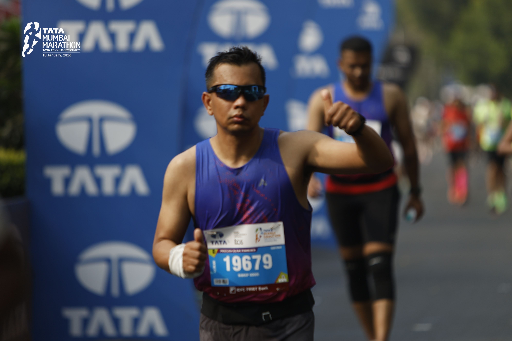

Total Runs
328
Logged across road, trail, and race days
Running journal / route archive / trail notes
A running journal for routes, reflections, training notes, and the miles that shape the journey.
About
Rideep Gogoi is a runner and traveller from Assam, now based in Bangalore. What began as a simple fitness habit has become a practice of consistency, endurance, recovery, and learning through the miles.
Trail Notes gathers race experiences, training insights, routes, travel stories, and lessons for beginner and recreational runners who want to train smarter while still enjoying the process.

Race Day
Tata Mumbai Marathon, 18 January 2026
Total Runs
328
Logged across road, trail, and race days
Total Distance
4,860 km
Steady miles built through consistency
Favourite Trail
Nandi Hills
Climbs, wind, and early light near Bangalore
Years Running
8+
From fitness habit to endurance practice
Featured Journey
The portfolio now anchors Rideep's story with a real race moment, giving the brand a human center while preserving the disciplined, minimalist Trail Notes identity.
Trail Blogs
Expandable blog entries that capture the useful details: where the run happened, how the body responded, and what the route taught.
Distance
14.2 km
Elevation
420 m
A controlled aerobic effort over rolling dirt, focused on posture, quiet feet, and finishing with more patience than pace.
The goal was not speed. It was rhythm. I kept the first climb deliberately quiet, letting the breathing settle before the trail opened into rolling dirt. The useful lesson was simple: when the effort stays honest early, the final kilometers become a place to practice form instead of negotiate with fatigue.
Distance
10.0 km
Elevation
96 m
Short surges between shaded sections. The route felt familiar, but the work was in staying relaxed when the pace settled in.
Tempo work around a familiar loop can become mechanical, so I used this run to check small things: shoulders low, cadence steady, and no panic when the watch showed a faster split. The best part of the session was not the pace. It was learning to stay relaxed while still asking the body to work.
Distance
24.6 km
Elevation
610 m
A nutrition rehearsal and reminder that good long runs are built from small decisions made before fatigue arrives.
This was a long-run rehearsal more than a fitness test. I practiced drinking before thirst, eating before the low patch, and keeping the climbs conservative. The forest road made the effort feel calm, but the real work was discipline: making the right decision early enough that the final stretch still felt controlled.
Routes
A static route archive for now, designed to become a practical library of trail profiles, terrain notes, and local knowledge.
Nandi Hills, Karnataka
HardBangalore, Karnataka
EasySouth Bangalore
ModerateGear / Training
Not an equipment catalog. Just the practical tools and habits that support consistent running.
Rotating dependable daily trainers with grippy trail shoes keeps the work specific without overcomplicating the kit.
Simple bottles, electrolytes on warm days, and enough discipline to drink before thirst becomes the signal.
Data is useful when it supports intent: heart rate, effort, recovery, and honest notes after the run.
Build consistency first, sharpen gradually, recover deliberately, and keep the joy of movement in the plan.
Gallery
The gallery uses restrained placeholders now and is ready for real run photos later without changing the page structure.
Race morning
Forest miles
Summit start
Recovery walk
Contact